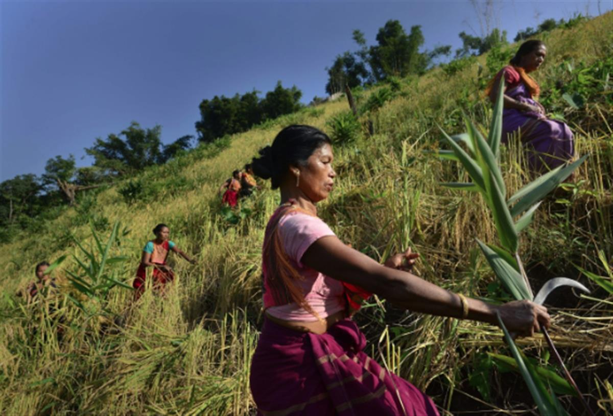

The biggest agroecology project in the world: in India, Andhra Pradesh is banking on 'zero budget natural agriculture'
An Indian State converts its 6 million farmers to agroecology. Andhra Pradesh, a state in south east India, opens the way with the largest agro-ecological project in the world and a plan to feed all its population without use of pesticides, chemical fertilisers nor intensive irrigation. Not only is it working but its best ambassadors are now the farmers themselves, who carry out this revolution with zero budget, save water, heal the soils and avoid taking on debts. I found this read truly inspiring and bringing hope that large-scale regeneration of agriculture can represent a win-win for all.
Olive Network Editor's note: This is taken from Geneva Solutions Newsletter. To read the full story please visit Le Monde.
